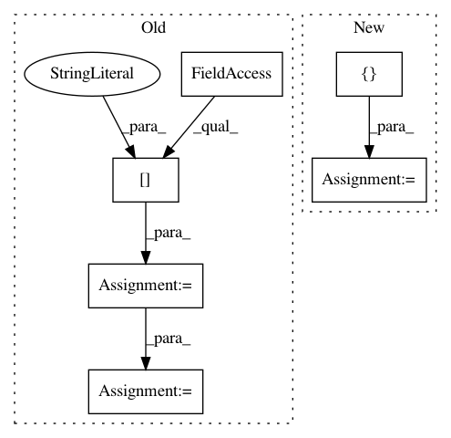

62d2ea56ae4a090aa68baf133137982a836700bd,thumt/utils/search.py,,create_inference_graph,#,430
Before Change
initial_ids = tf.fill([batch_size], tf.constant(bos_id, dtype=tf.int32))
inputs_old = features["source"]
inputs_length_old = features["source_length"]
// Expand the inputs in to the beam size
// [batch, length] => [batch, beam_size, length]
features["source"] = tf.expand_dims(features["source"], 1)
features["source"] = tf.tile(features["source"], [1, beam_size, 1])
shape = tf.shape(features["source"])
// [batch, beam_size, length] => [batch * beam_size, length]
features["source"] = tf.reshape(features["source"],
[shape[0] * shape[1], shape[2]])
// For source sequence length
features["source_length"] = tf.expand_dims(features["source_length"], 1)
features["source_length"] = tf.tile(features["source_length"],
[1, beam_size])
shape = tf.shape(features["source_length"])
// [batch, beam_size, length] => [batch * beam_size, length]
features["source_length"] = tf.reshape(features["source_length"],
[shape[0] * shape[1]])
vocab_size = len(params.vocabulary["target"])
// Setting decode length to input length + decode_length
decode_length = tf.shape(features["source"])[1] + decode_length
ids, scores = beam_search(symbols_to_logits_fn, initial_ids,
beam_size, decode_length, vocab_size,
alpha,
eos_id=params.mapping["target"][params.eos],
lp_constant=params.decode_constant)
// Set inputs back to the unexpanded inputs to not to confuse the Estimator
features["source"] = inputs_old
features["source_length"] = inputs_length_old
// Return `top_beams` decoding
// (also remove initial id from the beam search)
if not params.decode_normalize:
After Change
// shape of ids: [batch, beam_size, max_length]
// shape of coordinates: [batch, beam_size, 2]
batch_pos = compute_batch_indices(batch_size, beam_size)
coordinates = tf.stack([batch_pos, indices], axis=2)
ids = tf.gather_nd(ids, coordinates)
// Return `top_beams` decoding
// (also remove initial id from the beam search)
return ids[:, :top_beams, 1:], scores[:, :top_beams]
In pattern: SUPERPATTERN
Frequency: 3
Non-data size: 6
Instances
Project Name: THUNLP-MT/THUMT
Commit Name: 62d2ea56ae4a090aa68baf133137982a836700bd
Time: 2018-01-25
Author: playinf@stu.xmu.edu.cn
File Name: thumt/utils/search.py
Class Name:
Method Name: create_inference_graph
Project Name: brian-team/brian2
Commit Name: ddc73d49a2a80c55805ae9e298437a86c59cab23
Time: 2017-07-20
Author: charleetje@gmail.com
File Name: brian2/codegen/generators/GSL_generator.py
Class Name: GSLCodeGenerator
Method Name: write_dataholder
Project Name: dit/dit
Commit Name: 46324d0e05c679b2cf50b81289fe2886456f6e51
Time: 2017-09-19
Author: ryangregoryjames@gmail.com
File Name: dit/pid/ibroja.py
Class Name: BROJAOptimizer
Method Name: __init__